This program simulates the motion of a simple pendulum whose base is driven horizontally by x = a sin wt. The simulation is written in C++ and uses the QT application framework.
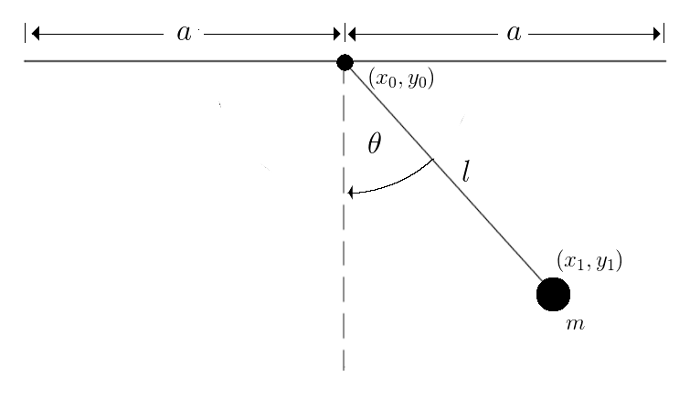Consider a pendulum of mass m and length l whose base is driven horizontally by x = a sin wt. For this system, we will choose the angle theta as the single generalized coordinate and develop the Lagrangian Equation of Motion:
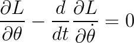Where L is the Lagrange function and T and U are the the total kinetic energy and total potential energy of the system.
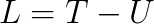We know the position of the base at any time in the simulation, so
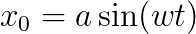Where a is the horizontal amplitude of motion and w is the speed of the motion. We can find the position of the mass with
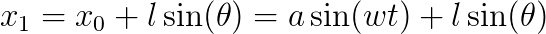where l is the length of the pendulum and theta is the angle of the pendulum as in the system diagram above. We can differentiate the position of the mass to find its velocity. Theta is a function of time, so remember to make use of the chain rule.
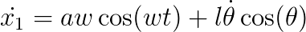Now that we know the velocity of the mass, we can find the total kinetic energy of the system
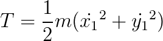where m is the mass of the pendulum. Note that the above expression could have been simplified by using the following trigonometry identity:
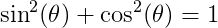The total potential energy of the system is then
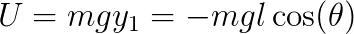And now we have the Lagrange function for this system.
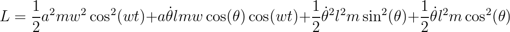Differentiate L with respect to theta and we get
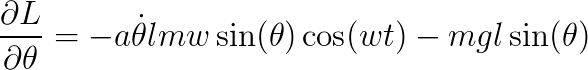Differentiate L with respect to the angular velocity and we get
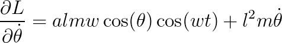Differentiate the above expression with respect to time and we get
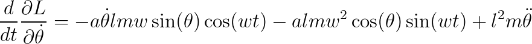Now we can plug the above derivatives into the Lagrange equation of motion
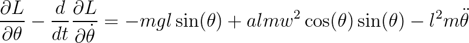And solve for the angular acceleration
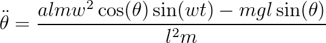In the simulation, we can integrate the above expression to find the angular velocity and integrate further to find the angular position.
The simulation program uses the QT application framework to provide a graphical interface for the user. This interface allows the user to change the initial pendulum angle, the pendulum length and mass, and the speed and amplitude of horizontal motion.
Download for QT 5.3.0: Lagrange Pendulum Simulation
Source: https://github.com/rlguy/lagrangependulum